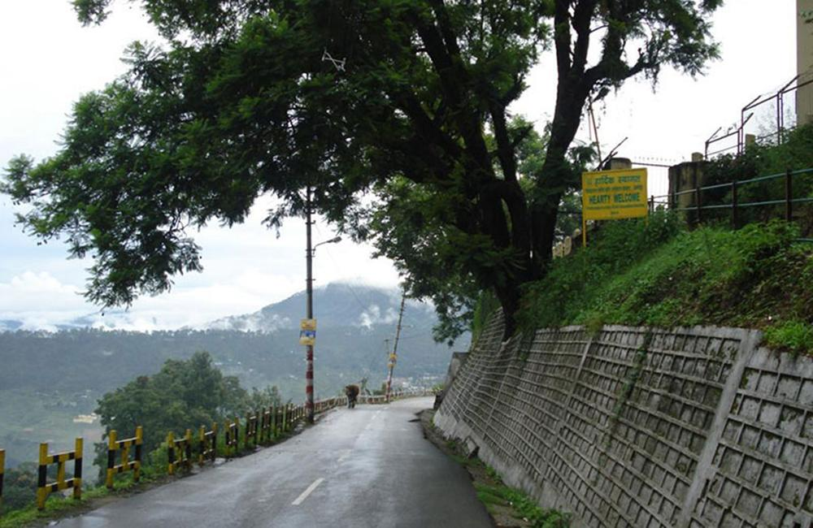
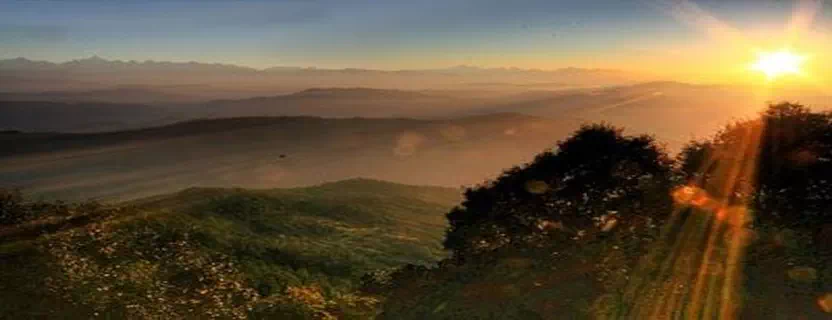
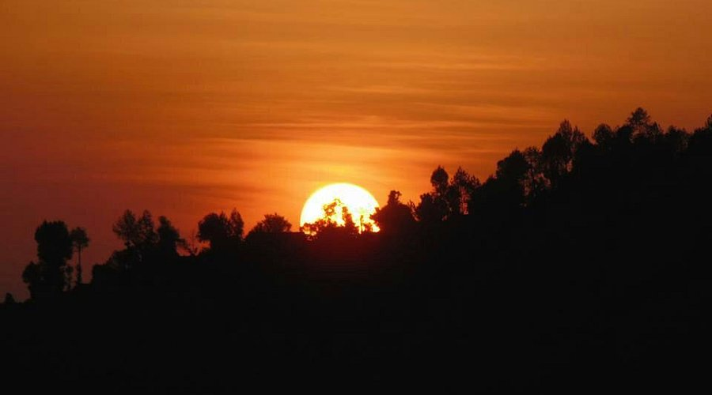
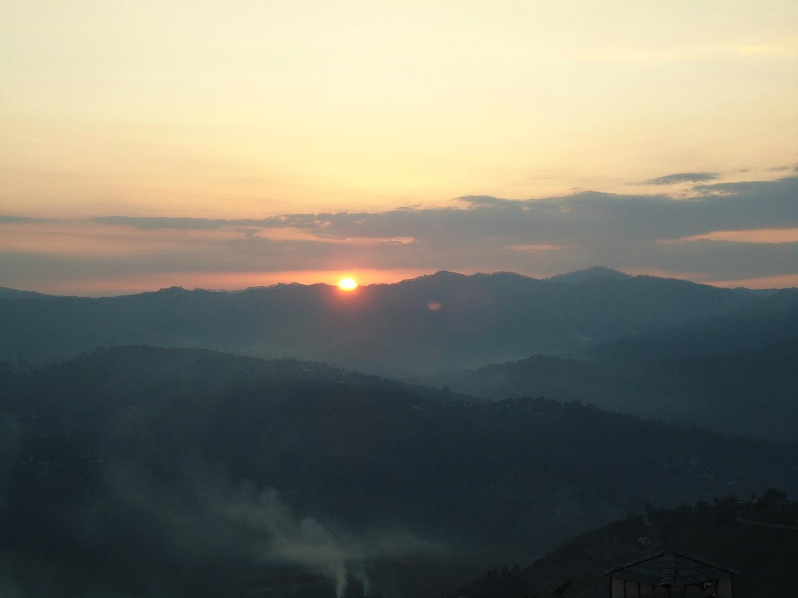
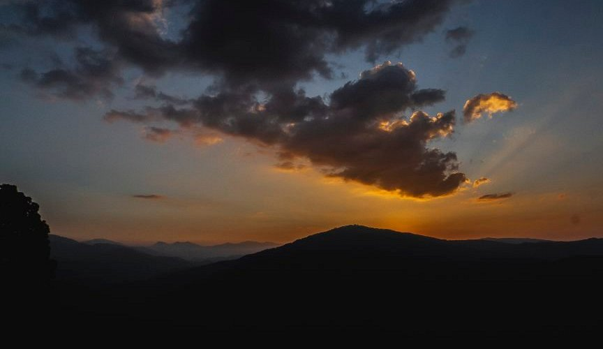

Bright End Corner (also known as Vivekananda Corner) is one of the most iconic and serene viewpoints in Almora, Uttarakhand. Perched at the edge of the Almora ridge, this spot offers breathtaking panoramic views of the snow-capped Himalayan peaks, including Trishul, Nanda Devi, Panchachuli, and Nandakot. The name "Bright End Corner" originates from Mr. Brighton, and it marks the starting point of Mall Road while serving as a perfect vantage for witnessing the magical sunrise and sunset over the mountains.
Almora, the cultural heart of Kumaon, is surrounded by pine and deodar forests, and Bright End Corner captures its essence perfectly — a place of tranquility where the golden hues of dawn and dusk paint the sky against the mighty Himalayas. It's a favorite among nature lovers, photographers, meditators, and anyone seeking peace. Nearby spiritual spots like Sri Ramakrishna Kutir Ashram and the Swami Vivekananda Library add a meditative touch, making it ideal for soul-soothing moments amid nature's grandeur.
Early morning for sunrise or late afternoon for sunset (arrive 30–45 minutes early). October to March offers the clearest skies and sharpest Himalayan views; avoid monsoon for better visibility.
Panoramic 180° Himalayan vistas, peaceful ridge-edge location, short easy access from town, nearby meditation centers like Ramakrishna Kutir and Vivekananda spots — perfect for reflection and photography.
Wear comfortable shoes for the short walk/trek, carry water and snacks, respect the serene atmosphere (keep noise low), visit nearby ashrams for extra peace, and stay till the full sunset to catch the dramatic colors.
"Bright End Corner is where the sky meets the eternal Himalayas — a silent symphony of light, peace, and mountain majesty that reminds us of nature's quiet grandeur."